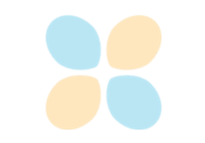

Recipes
Showcases the recipes that might help you using Optuna with comfort.

Saving/Resuming Study with RDB Backend
Saving/Resuming Study with RDB Backend


Early-stopping independent evaluations by Wilcoxon pruner
Early-stopping independent evaluations by Wilcoxon pruner